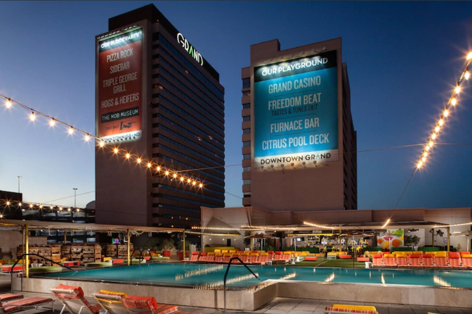
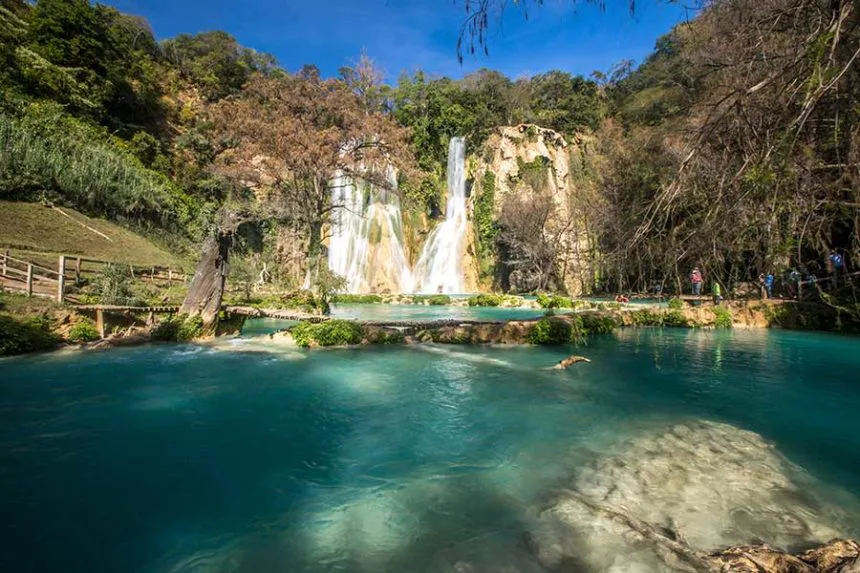
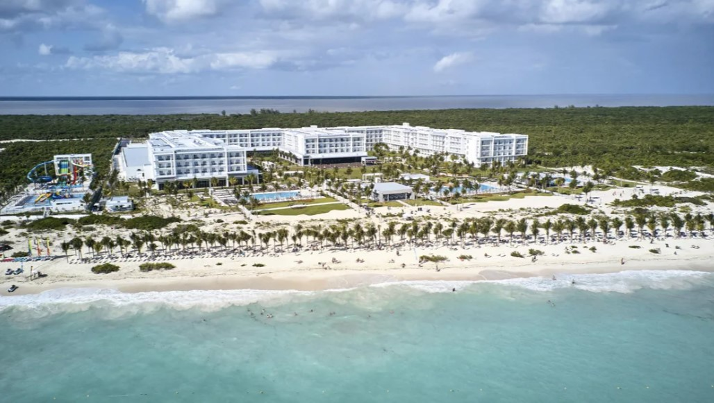
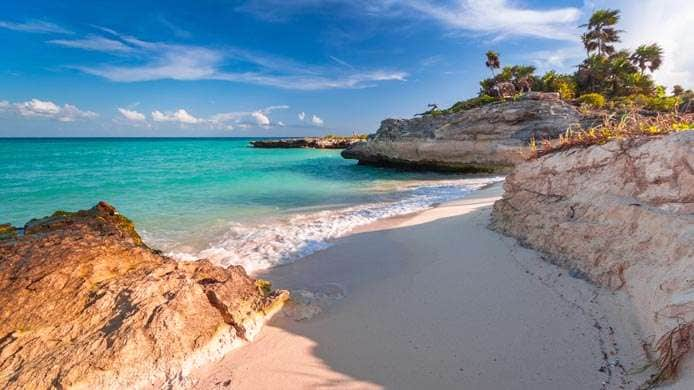

Gato Volador S.A de C.V.
Recomendados por Gato Volador S.A de C.V.

Downtown Grand Las Vegas
Hotel situado en el centro de las Vegas, Nevada, Estados Unidos, este hotel cuenta con 1,124 habitaciones y 25 pisos La propiedad cuenta con un estacionamiento de cuatro niveles y cuenta con varios restaurantes y lugares de entretenimiento a lo largo de 3rd Street. Estos establecimientos incluyen Freedom Beat, Triple George Grill, Sidebar y Hogs and Heifers Saloon.
Mas Detalles

Huasteca Potosina
La Huasteca Potosina es una región ubicada al noreste de la República Mexicana, en el estado de San Luis Potosí, y conformada por 20 municipios. En la época precolonial la zona fue habitada, principalmente, por el pueblo huasteco y era parte de una importante ruta comercial
Mas Detalles

Londres
Londres es la capital y mayor ciudad de Inglaterra y del Reino Unido. Situada a orillas del río Támesis, Londres es un importante asentamiento humano desde que fue fundada por los romanos con el nombre de Londinium hace casi dos milenios. Hogar de los Centros Turísticos mas memorables del mundo
Mas Detalles

Riu Dunamar All Inclusive
Con 5 piscinas al aire libre, el Riu Dunamar All Inclusive está situado frente a Playa Costa Mujeres, en Cancún. La propiedad cuenta con el Splash Water World, un parque acuático con toboganes, además de régimen all inclusive 24h. El hotel está a 19,5 km del Centro de Cancún.
Mas Detalles

Playa del Carmen
Playa del Carmen es un balneario costero de México que se ubica a lo largo de la costa caribeña de la Riviera Maya, en la Península de Yucatán. Pertenece al estado de Quintana Roo y es famosa por sus playas bordeadas de palmeras y los arrecifes de coral
Mas Detalles